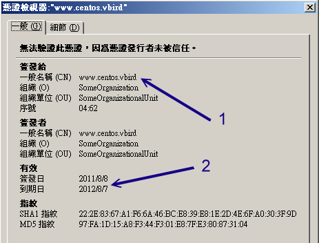

20.5 建立連線加密網站 (https) 及防砍站腳本
從本章一開始的 20.1 就談過 http 這個通訊協定是明碼傳送資料，而那個 https 才是加密傳輸的！那加密的方法是透過 SSL 啊，這個 SSL 就是以 openssl 軟體來提供的一個加密函式庫。更多與 https 有關的資訊，請參考 20.1.4 吧！
20.5.1 SSL 所需軟體與憑證檔案及預設的 https
要達成讓 apache 支援 https 協定的話，你必須要有 mod_ssl 這個軟體才行！請先自行使用 yum 去裝好這個軟體吧！ 並且重新啟動 httpd 喔！同時，我們的 CentOS 6.x 也已經預設提供了 SSL 機制所需要的私鑰與憑證檔案囉！相關軟體提供的檔案如下：
- /etc/httpd/conf.d/ssl.conf：mode_ssl 提供的 Apache 設定檔；
- /etc/pki/tls/private/localhost.key：系統私鑰檔，可以用來製作憑證的！
- /etc/pki/tls/certs/localhost.crt：就是加密過的憑證檔！(signed certificate)
既然系統都已經幫我們搞定了，那麼就讓我們直接來瀏覽一下，看看系統預設提供的 https 是長的什麼模樣吧！ 打開你的瀏覽器，輸入 https://你的IP 來連線看看：
 圖 20.5-1、在 firefox 底下看到的 SSL 安全問題圖示
圖 20.5-1、在 firefox 底下看到的 SSL 安全問題圖示
就如同本章 20.1.4 談到的，因為我們這個 Apache 網站並沒有將此憑證向 CA 註冊，因此就會出現上述的訊息了！ 這就類似 ssh 連線時，系統需要你輸入『 yes 』是一樣的啦！要接受憑證後才能夠進行加密的功能。所以，請點選上圖中的箭頭 1，此時就會延伸出箭頭 2 的位置，按下去吧！然後就會出現如下所示：
 圖 20.5-2、在 firefox 底下接受一把私有的憑證所需要的流程
圖 20.5-2、在 firefox 底下接受一把私有的憑證所需要的流程
如果你確定這個網站是你自己的可信任網站，那就按下 1 及 2 的箭頭處！如果還想要看一下這個網站所提供的相關憑證內容， 就按下 3 箭頭的地方：
 圖 20.5-3、在 firefox 底下觀察憑證的詳細內容
由於這個憑證檔案的建置是在第一次啟動 Linux 時就安裝好了憑證檔，而在 CentOS 6.x 底下，預設的憑證有效期限為 1 年，所以你就會看到上圖中箭頭 2 所指的，簽發日到到期日共有一年啊！當你按下關閉後，就能夠看到實際的 https:// 提供的網站內容囉！這就是預設的 SSL 網站啦！你的重要資訊可以放在這裡～讓資料在網路上傳輸更佳的安全！
20.5.2 擁有自製憑證的 https
- 建立憑證檔
預設的憑證雖然已經可以讓你順利的使用 https 了，不過，憑證的有效日僅有 1 年而已～實在討厭～ 所以，我們還是得要自製憑證才行～這個憑證的製作僅是私有 WWW 網站的用途，並沒有要拿去 CA 註冊喔！ 那麼自製憑證需要什麼步驟呢？基本上需要的流程是：
- 先建立一把 private key 預備提供給 SSL 憑證簽章要求所用；
- 最後建立 SSL 憑證 (test certificates)。
那麼建立憑證有沒有很困難呢？沒有啦！因為 CentOS 6.x 已經幫我們寫好了 Makefile 了！你先到 /etc/pki/tls/certs 這個目錄下，然後直接輸入 make 這個指令，就能夠看到所有可行的目標動作！我們就可以很快速的建置好憑證喔！ 不過，因為預設的私鑰檔需要加上密碼才能夠進行建立，所以我們還得要額外進行一下動作就是了。好！ 現在假設我們要建立的是名為 vbird 的憑證！那麼底下流程中，所有的關鍵字就是 vbird！簡單流程如下所示：
# 1\. 先到 /etc/pki/tls/certs 去建立一把給 Apache 使用的私鑰檔案：
[root@www ~]# cd /etc/pki/tls/certs
[root@www certs]# make vbird.key
umask 77 ; /usr/bin/openssl genrsa -aes128 2048 > vbird.key <==其實是這個指令
Generating RSA private key, 2048 bit long modulus
.................................................................+++
...............................+++
e is 65537 (0x10001)
Enter pass phrase: <==這裡輸入這把私鑰的密碼，需要多於四個字元！
Verifying - Enter pass phrase: <==再一次！
# 2\. 將剛剛建立的檔案中，裡面的密碼取消掉！不要有密碼存在啦！
[root@www certs]# mv vbird.key vbird.key.raw
[root@www certs]# openssl rsa -in vbird.key.raw -out vbird.key
Enter pass phrase for vbird.key.raw: <==輸入剛剛的密碼啦！
writing RSA key
[root@www certs]# rm -f vbird.key.raw <==舊的金鑰檔移除
[root@www certs]# chmod 400 vbird.key <==權限一定是 400 才行！
# 3\. 建置所需要的最終憑證檔！
[root@www certs]# make vbird.crt SERIAL=2011080801
umask 77 ; /usr/bin/openssl req -utf8 -new -key vbird.key -x509 -days 365
-out vbird.crt -set_serial 2011080801 <==可以加入日期序號
You are about to be asked to enter information that will be incorporated
into your certificate request.
-----
Country Name (2 letter code) [XX]:TW
State or Province Name (full name) []:Taiwan
Locality Name (eg, city) [Default City]:Tainan
Organization Name (eg, company) [Default Company Ltd]:KSU
Organizational Unit Name (eg, section) []:DIC
Common Name (eg, your name or your server's hostname) []:www.centos.vbird
Email Address []:vbird@www.centos.vbird
[root@www certs]# ll vbird*
-rw-------. 1 root root 1419 2011-08-08 15:24 vbird.crt <==最終憑證檔！
-r--------. 1 root root 1679 2011-08-08 15:22 vbird.key <==系統私鑰檔
這樣就建立好憑證檔了！接下來就是得要去處理 ssl.conf 這個設定內容喔！另外，這把憑證依舊只能使用 1 年！如果你想要建立十年的憑證，那就得要修改一下 Makefile 裡面的內容，將 365 改成 3650 即可！
Tips: 如果你曾經多次重複進行上述的建立憑證動作，會發現到同一個憑證內容若製作多次，則最終用戶端瀏覽器會出現一些錯誤訊息， 導致無法連線！因此，建議多加一個序號 (SERIAL) 的參數，可以修訂這個錯誤喔！

- 修改 ssl.conf 的內容，使用自製憑證
修改 ssl.conf 的內容也是很簡單！只要修改兩個地方，亦即是檔案檔名的地方即可！
[root@www ~]# vim /etc/httpd/conf.d/ssl.conf
SSLCertificateFile /etc/pki/tls/certs/vbird.crt <==約在 105 行
SSLCertificateKeyFile /etc/pki/tls/certs/vbird.key <==約在 112 行
[root@www ~]# /etc/init.d/httpd restart
然後再以瀏覽器去瀏覽 https:// 的網址，就能夠查閱到剛剛建立的憑證資料。不過，因為我們之前已經有瀏覽過預設的憑證， 所以網頁以及憑證都有被快取過！因此，你可能得需要到瀏覽器的隱私保護的地方，將記錄的憑證刪除，並且將網頁快取刪除， 這樣才能夠看到最終如下的正確憑證資料喔！
 圖 20.5-4、檢查憑證的詳細內容！
圖 20.5-4、檢查憑證的詳細內容！
20.5.3 將加密首頁與非加密首頁分離
或許你已經發現一個無俚頭的地方，就是我的 http:// 以及 https:// 首頁是一模一樣的嘛！那麼我的讀者幹嘛沒事找事幹， 肯定不會使用 https 的嘛！那怎辦？怎麼強制使用者使用 https:// 來查閱我的重要資料？很簡單啊！ 透過虛擬主機就好了啊！因為 SSL 模組也是預設提供了這個功能的嘛！修改會不會很麻煩呢？不會啦！ 你只要將 http 及 https 的首頁分離即可！我們這麼假設好了：
- 一般明碼傳輸的網頁首頁不要變更；
- https:// 的首頁放置到 /var/www/https/ 目錄下。
所以我們得先要設定 /var/www/https 目錄才行！然後，只要修改 ssl.conf 檔案內容即可！整個過程可以這樣處理：
# 1\. 處理目錄與預設的首頁 index.html 檔案：
[root@www ~]# mkdir /var/www/https
[root@www ~]# echo "This is https' home" > /var/www/https/index.html
# 2\. 開始處理 ssl.conf 的內容囉！
[root@www ~]# vim /etc/httpd/conf.d/ssl.conf
Listen 443 <==預設的監聽埠口！不建議修改！
<VirtualHost _default_:443> <==就是虛擬主機的設定囉！
DocumentRoot "/var/www/https" <==約84行，拿掉註解改掉目錄名稱
ServerName *:443 <==拿掉註解，並將主機名稱設定為 *
SSLEngine on <==有支援 SSL 的意思！
SSLCipherSuite ALL:!ADH:!EXPORT:!SSLv2:RC4+RSA:+HIGH:+MEDIUM:+LOW
SSLCertificateFile /etc/pki/tls/certs/vbird.crt
SSLCertificateKeyFile /etc/pki/tls/certs/vbird.key
</VirtualHost>
[root@www ~]# /etc/init.d/httpd restart
大部分都使用預設值，就是 DocumentRoot 以及 ServerName 需要留意就是了。如此一來，我們就將 https, http 兩個完整的分開，你的重要資料需要加密的，終於有個可靠的地方擺放囉！^_^
20.5.4 防砍站軟體
幾個比較知名的網站管理員大概都有這樣的困擾，那就是網站常被砍站軟體所強力下載，結果造成主機的 CPU loading 過重，最後竟然會導致死掉～唉！真是的～人怕出名豬怕肥吶！先來解釋一下什麼是砍站吧！
所謂的『砍站』，就是以類似多點連線下載的持續性訊息傳遞軟體進行網站資料的下載，而且， 一啟用該軟體，該軟體就將『整個網站』的內容都給他 download 下來，很厲害吧！沒錯！是很厲害，但是卻也害死人了～怎麼說呢？
因為這種軟體常常會為了加快 download 的速度，所以採用多點連線的方式，也就是會持續不斷的向 Server 發出要求封包，而由於這些封包並不見得能夠成功的讓 Server 把資料傳導給 Client 端，常常會無法投遞就是啦！這樣的結果就是...造成 Server 要一直不斷的回應，又無法正確的回應出去， 此外，要求太過頻繁，結果主機應接不暇，最後...就當機了...真的是林老師ㄌㄟ～
鳥哥的鳥站主機古早以前，就是因為這樣的原因，導致服務常常斷斷續續的，並且，由於 CPU loading 太高，結果讓正常連線進來看資料的網友沒有足夠的資源，因此網頁開啟的速度就變的很慢～唉～ 這些砍站的人，也太不道德啦！
由於這種砍站軟體真的很麻煩，一不注意馬上就又會被砍站而當機，三天兩頭就要重新開機一次，完全讓 Linux 的穩定性無法發揮！真是氣死了～後來，鳥哥就自行寫了一個 scripts 來擋這樣的 IP ！我的作法是這樣的：
- 由於砍站軟體會多點連續下載，因此，同一個 IP 在同一個時間內，會有相當多的連線發生；
- 由於他是重複不斷的要求連線，因此剛剛建立的連線在達成下載的目的後，會立刻死掉， 而又多生出其他的連線出來，因此，這個時候他的連線情況就變的相當的不正常了！
- 由於某些較舊的砍站軟體並不會『欺騙』主機，所以，會在主機的登錄檔裡面記錄住 Teleport 的標記！
- 既然如此的話，那麼我就讓我的主機每分鐘去檢查兩個東西(1)先檢查 log file ，如果有發現到相關的 Teleport 字詞，就將該 IP 抵擋掉；(2)使用 netstat 來檢查同一個 IP 的同時連線，如果該連線超過一個值(例如同時有 12 個連線)的話，那麼就將該 IP 抵擋掉！
- 此外，由於上面的方案可能會將 Proxy 的 Client 端也同時抵擋掉，真是可憐啊！ 這個時候，這支程式就會主動的將(1)的情況的主機抵擋 3 天，至於(2)的情況則抵擋2小時！ 過了該抵擋的時限後，該 IP 即可又連上我們的主機了！
大致上就是這樣吧！這樣的一程式需要與 iptables 相互配合，所以，請先查閱一下第九章的防火牆內容，然後再來下載這支程式吧！ 這支程式你可以在底下的網址下載喔！
詳細的安裝步驟鳥哥已經以中文寫在該檔案裡面了，所以請先查看一下該檔案的前面說明部分吧！此外， Study Area 的 netman 大哥也已經開發了一套很棒的防砍站的程式了！ 在防堵砍站的原理上面是完全相同的，不過寫法可能不是很雷同就是了！如果有需要的話，也可以前往 Study-Area 搜尋一下囉！